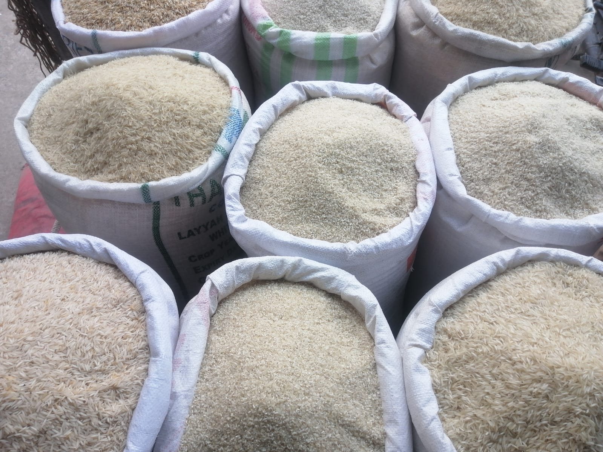
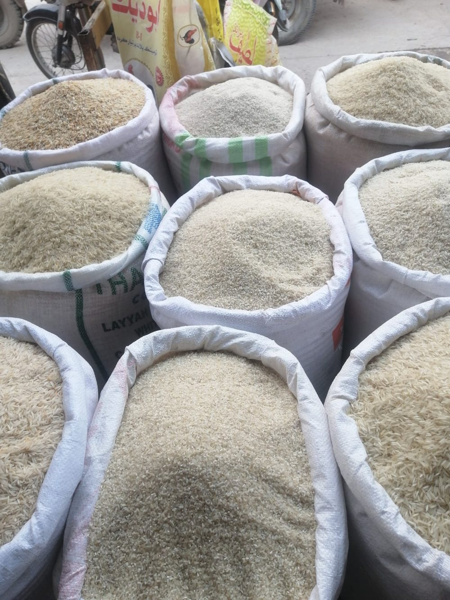
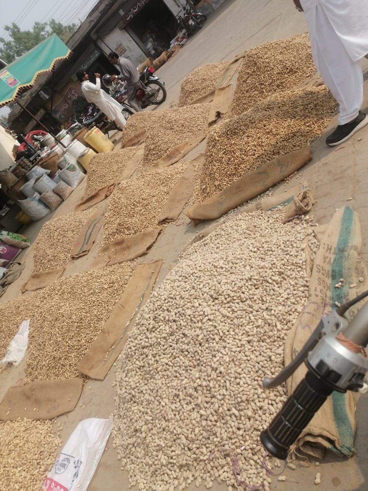
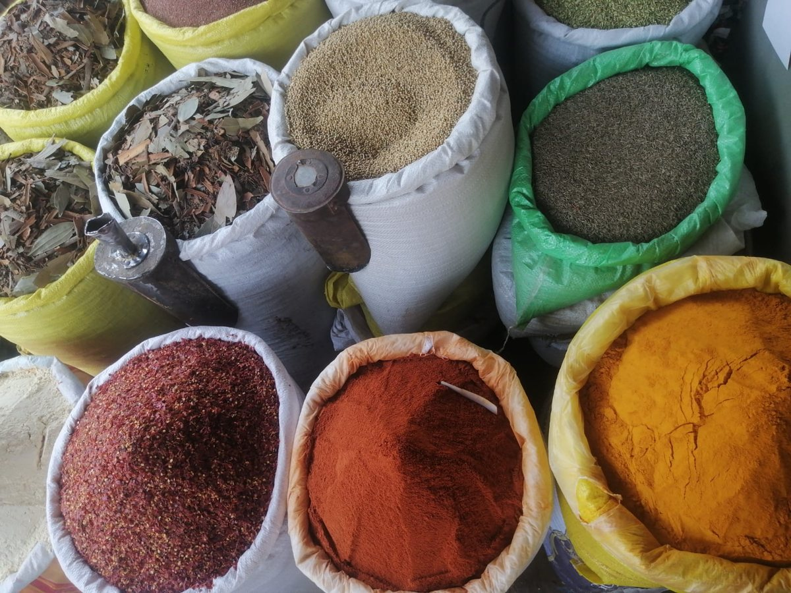
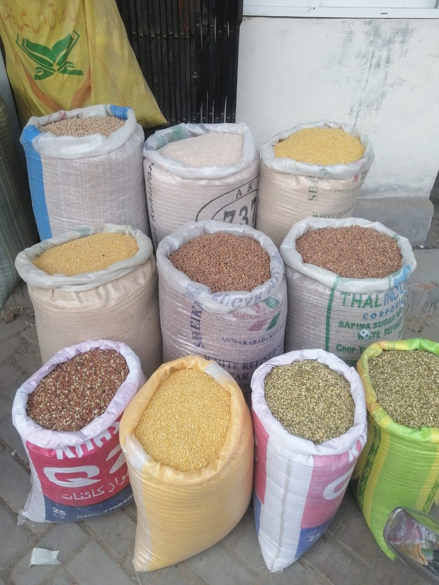
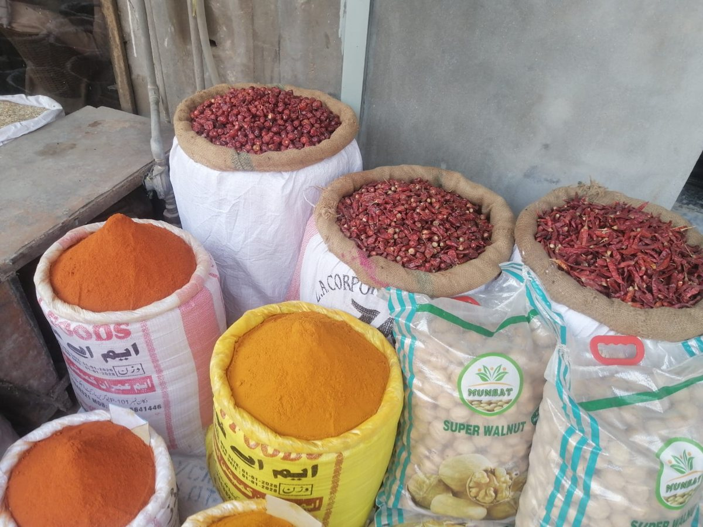
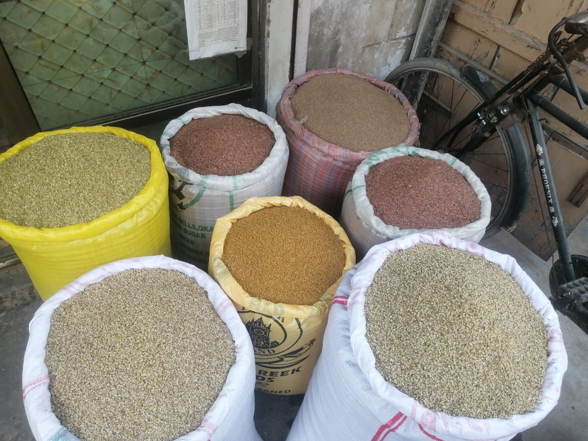

Grain Market Products
Grain Market Products, Naturally Presented.
Explore a selection of grains, pulses, spices, and agricultural commodities associated with the grain market.

Catalogue
Product Catalogue
Ten recognised agricultural commodities — rice, pulses, spices, maize, and wheat — presented for identification and reference.
No products in this category yet.
From the Market
Inside the Grain Market
Photographs supplied by N&N International, showing the sacks, stalls, and commodities of a working grain market.






About
About N&N International
N&N International presents a curated visual catalogue of grain market commodities, including rice, pulses, spices, and other agricultural products. This website provides a simple way to explore the products associated with our grain market identity.
Contact
Get in Touch
For product-related enquiries, please use the contact details provided by our team.
Contact information will be provided here. Verified telephone, email, and address details can be added to this section as soon as they are supplied by the N&N International team — no details are listed until they have been confirmed.